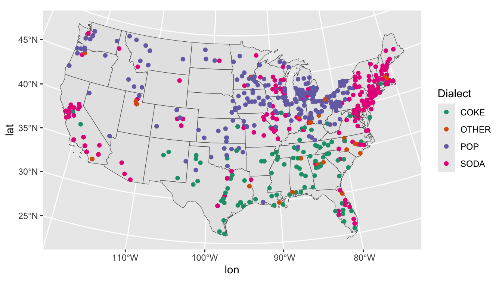
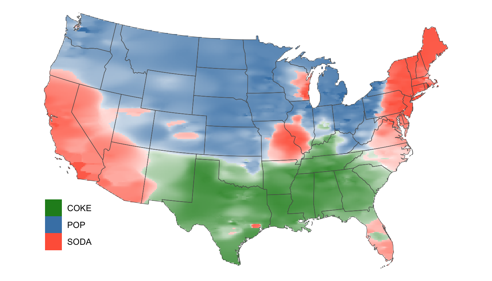

# A couple for data wrangling...
library(tidyverse)
library(data.table)
library(gt)
# Our plots will be based on the results of knn...
library(kknn) # for knn
# We have some relatively intensive processing tasks that can be sped up...
library(foreach) # for iterating over elements in a collection
library(doParallel) # for parallel processing
# And we'll be working with spatial data, so we need some specialized packages...
library(sf) # for spatial data
library(rnaturalearth) # map data for plotting
library(housingData) # geolocation data
require(rgeos)14 Geospacial Mapping: POP? SODA? or COKE?
In 2013 a statistics (!) grad student at NC State named Joshua Katz put up a series of maps on an R Studio server that plotted the geographic distributions of lexical variants across the US. These turned out to be wildly popular and he published versions at Business Insider:
https://www.businessinsider.com/american-english-dialects-maps-2018-1
And at the New York Times, where he now works:
https://www.nytimes.com/interactive/2014/upshot/dialect-quiz-map.html
His maps are based on data collect by Bert Vaux and Scott Golder for the Harvard Dialect Survey in 2003:
http://www4.uwm.edu/FLL/linguistics/dialect/index.html
Katz’s work is an interesting application of KNN to geospatial data. There is a nice introduction to the KNN algorithm here:
https://www.analyticsvidhya.com/blog/2018/03/introduction-k-neighbours-algorithm-clustering/
We’re going to re-create Katz’s pop vs. soda plot. This exercise requires a number of packages.
14.1 Prepare the Data
14.1.1 Load the pop vs. soda data
Read in the data.
pvs_df <- read_csv("../data/pop_vs_soda.csv", show_col_types = F)Note how the data is structures.
| State | County_Name | FIPS_State | FIPS_County | FIPS_combo | id | ID1_GADM | NAME_ST | ID2_GADM | NAME_COU | SUMCOUNT | SUMPOP | SUMSODA | SUMCOKE | SUMOTHER | COUNT | PCTPOP | PCTSODA | PCTCOKE | PCTOTHER |
|---|---|---|---|---|---|---|---|---|---|---|---|---|---|---|---|---|---|---|---|
| Alabama | Autauga | 01 | 001 | 01001 | 1001 | 1 | Alabama | 1 | Autauga | 19 | 0 | 5 | 13 | 1 | 4 | 0.00000 | 0.26316 | 0.68421 | 0.05263 |
| Alabama | Baldwin | 01 | 003 | 01003 | 1003 | 1 | Alabama | 2 | Baldwin | 78 | 1 | 5 | 70 | 2 | 12 | 0.01282 | 0.06410 | 0.89744 | 0.02564 |
| Alabama | Barbour | 01 | 005 | 01005 | 1005 | 1 | Alabama | 3 | Barbour | 18 | 0 | 3 | 14 | 1 | 3 | 0.00000 | 0.16667 | 0.77778 | 0.05556 |
| Alabama | Bibb | 01 | 007 | 01007 | 1007 | 1 | Alabama | 4 | Bibb | 9 | 0 | 1 | 8 | 0 | 4 | 0.00000 | 0.11111 | 0.88889 | 0.00000 |
| Alabama | Blount | 01 | 009 | 01009 | 1009 | 1 | Alabama | 5 | Blount | 16 | 0 | 2 | 13 | 1 | 3 | 0.00000 | 0.12500 | 0.81250 | 0.06250 |
| Alabama | Bullock | 01 | 011 | 01011 | 1011 | 1 | Alabama | 6 | Bullock | 10 | 0 | 9 | 1 | 0 | 1 | 0.00000 | 0.90000 | 0.10000 | 0.00000 |
| Alabama | Butler | 01 | 013 | 01013 | 1013 | 1 | Alabama | 7 | Butler | 9 | 0 | 2 | 7 | 0 | 1 | 0.00000 | 0.22222 | 0.77778 | 0.00000 |
| Alabama | Calhoun | 01 | 015 | 01015 | 1015 | 1 | Alabama | 8 | Calhoun | 85 | 1 | 18 | 62 | 4 | 12 | 0.01176 | 0.21176 | 0.72941 | 0.04706 |
| Alabama | Chambers | 01 | 017 | 01017 | 1017 | 1 | Alabama | 9 | Chambers | 11 | 0 | 2 | 9 | 0 | 4 | 0.00000 | 0.18182 | 0.81818 | 0.00000 |
| Alabama | Cherokee | 01 | 019 | 01019 | 1019 | 1 | Alabama | 10 | Cherokee | 9 | 0 | 0 | 9 | 0 | 3 | 0.00000 | 0.00000 | 1.00000 | 0.00000 |
14.1.2 Convert FIPS codes to longitude and latitude
We have counts by state and county. Importantly, those counts are identified by Federal Information Processing System (FIPS) codes. To convert that information to something map-able, we need GIS data for those FIPS codes. For that we can use data from the housingData package.
hd <- housingData::geoCounty
hd$fips <- as.character(hd$fips)Now let’s select the columns we need from our data, and put that data in a long format.
pvs_df <- pvs_df %>% select(fips = FIPS_combo, POP = SUMPOP, SODA = SUMSODA,
COKE = SUMCOKE, OTHER = SUMOTHER)
pvs_df <- pvs_df %>%
pivot_longer(!fips, names_to = "var", values_to = "freq") %>%
filter(freq != 0) Code
pvs_df |>
head(10) |>
gt()| fips | var | freq |
|---|---|---|
| 01001 | SODA | 5 |
| 01001 | COKE | 13 |
| 01001 | OTHER | 1 |
| 01003 | POP | 1 |
| 01003 | SODA | 5 |
| 01003 | COKE | 70 |
| 01003 | OTHER | 2 |
| 01005 | SODA | 3 |
| 01005 | COKE | 14 |
| 01005 | OTHER | 1 |
For the task, we need to convert counts into instances. For example, if there are 3 soda users in a county, we want:
soda, soda, soda in the variable column. For that, we can use the data.table package.
setDT(pvs_df)
pvs_df <- pvs_df[rep(seq(.N), freq), !"freq"]Code
pvs_df |>
head(10) |>
gt()| fips | var |
|---|---|
| 01001 | SODA |
| 01001 | SODA |
| 01001 | SODA |
| 01001 | SODA |
| 01001 | SODA |
| 01001 | COKE |
| 01001 | COKE |
| 01001 | COKE |
| 01001 | COKE |
| 01001 | COKE |
Now let’s join this with the GIS data to add longitudes and latitudes, and drop any empty rows.
pvs_df <- left_join(pvs_df, select(hd, fips, lon, lat), by = "fips")
pvs_df <- pvs_df[!is.na(pvs_df$lon), ]Code
pvs_df |>
head(10) |>
gt()| fips | var | lon | lat |
|---|---|---|---|
| 01001 | SODA | -86.64565 | 32.54009 |
| 01001 | SODA | -86.64565 | 32.54009 |
| 01001 | SODA | -86.64565 | 32.54009 |
| 01001 | SODA | -86.64565 | 32.54009 |
| 01001 | SODA | -86.64565 | 32.54009 |
| 01001 | COKE | -86.64565 | 32.54009 |
| 01001 | COKE | -86.64565 | 32.54009 |
| 01001 | COKE | -86.64565 | 32.54009 |
| 01001 | COKE | -86.64565 | 32.54009 |
| 01001 | COKE | -86.64565 | 32.54009 |
14.1.3 Prepare a map
Now let’s get the information we need for our map. We’ll start with a map of the US states.
states_us <- rnaturalearthdata::states50There are several map options. We’re going to select iso_a2. We’ll also drop Alaska and Hawaii, so we’ll only plot the Continental US.
states_us <- states_us[states_us$iso_a2 == 'US',]
states_us <- states_us[ !grepl( "Alaska|Hawaii" , states_us$name ) , ]Finally we want to convert this into an sf object for later plotting. This creates a simple features object. For more about simple features see here:
https://r-spatial.github.io/sf/articles/sf1.html
states_us <- st_as_sf(states_us)14.1.4 Transform the data for plotting
Now we’ll similarly convert the coordinates in our pop vs. soda data. Note that we point the st_as_sf() function to our “lon” and “lat” columns. Additionally, we need to specify the coordinate reference system (crs). This can be tricky… See here for a discussion:
https://ryanpeek.github.io/2017-08-03-converting-XY-data-with-sf-package/
We’re specifying The World Geodetic System 1984 or WGS84.
point_data <- pvs_df %>% st_as_sf(coords = c("lon", "lat"), crs = "+proj=longlat +ellps=WGS84")Finally, we need to specify a projection. Remember we are “projecting” geographical space into 2 dimensions. So we have to decide what convention to use. We’ll use the North America Lambert Conformal Conic projection:
https://en.wikipedia.org/wiki/Lambert_conformal_conic_projection
nalcc <- "+proj=lcc +lat_1=20 +lat_2=60 +lat_0=40 +lon_0=-96 +x_0=0 +y_0=0 +ellps=GRS80 +datum=NAD83 +units=m +no_defs"Now, we can transform our US data to fit this projection. And likewise our pop vs. soda data.
us <- states_us %>% st_transform(nalcc)
point_data <- point_data %>% st_transform(nalcc)Next, we’ll make a data.frame with 3 columns. And we’ll convert our variable to a factor.
dialects_train <- data.frame(dialect = point_data$var,
lon = st_coordinates(point_data)[, 1],
lat = st_coordinates(point_data)[, 2]) %>%
mutate(dialect = as.factor(dialect))Code
dialects_train |>
head(10) |>
gt()| dialect | lon | lat |
|---|---|---|
| SODA | 832585.8 | -736015.3 |
| SODA | 832585.8 | -736015.3 |
| SODA | 832585.8 | -736015.3 |
| SODA | 832585.8 | -736015.3 |
| SODA | 832585.8 | -736015.3 |
| COKE | 832585.8 | -736015.3 |
| COKE | 832585.8 | -736015.3 |
| COKE | 832585.8 | -736015.3 |
| COKE | 832585.8 | -736015.3 |
| COKE | 832585.8 | -736015.3 |
To get a sense of our data, we can take a random sample from our training data and plot it.
dialects_sample <- dialects_train %>% sample_n(1000)
ggplot(data = dialects_sample) +
geom_sf(data = us) +
geom_point(aes(x = lon, y = lat, color = dialect), alpha = 1) +
scale_color_brewer(palette = "Dark2", name = "Dialect")
14.2 KNN classification
14.2.1 Case study: Allegheny and Philadelphia counties
The implementation of the knn classifier is a little different from earlier classification problems, so let’s walk through the basic idea with a quick example. First, let’s subset out the data for 2 counties: Allegheny and Philadelphia counties (identified by their FIPS codes).
Then, we’ll construct a simple data frame with 3 columns.
dialects_penn <- point_data[grepl("42003|42101", point_data$fips), ]
dialects_penn <- data.frame(dialect = dialects_penn$var,
lon = st_coordinates(dialects_penn)[, 1],
lat = st_coordinates(dialects_penn)[, 2]) %>%
mutate(dialect = as.factor(dialect))From that, we can split the data into a training and test set.
set.seed(123)
valid_split <- rsample::initial_split(dialects_penn, .75)
penn_train <- rsample::analysis(valid_split)
penn_test <- rsample::assessment(valid_split)For more conventional classification tasks, we would want to determine the optimal k for our model using the train.kknn() function:
https://rpubs.com/bonibruno/svm-knn
For our purposes, we’ll use a quick rule of thumb and use the square-root of our n observations. Now we can call a model in which we try to predict the dialect variant (soda, pop, coke, other) based on geolocation.
knn_penn <- kknn::kknn(dialect ~ .,
train = penn_train,
test = penn_test,
kernel = "gaussian",
k = 61)For conventional classification tasks, we would be interested in our confusion matrix, and our model’s accuracy
tab <- table(knn_penn$fitted.values, penn_test$dialect)
accuracy <- function(x){sum(diag(x)/(sum(rowSums(x)))) * 100}
accuracy(tab)|>
data.frame() |>
gt()| accuracy.tab. |
|---|
| 88.16327 |
For our purposes, we’re interested in the probabilities of each variant being preferred based on location. Allegheny county is at the top of our table, with a very strong preference for pop.
Code
knn_penn$prob |>
head(1) |>
data.frame() |>
gt()| COKE | OTHER | POP | SODA |
|---|---|---|---|
| 0 | 0 | 0.9672131 | 0.03278689 |
And Philadelphia county is at the bottom of our table with a strong preference for soda.
Code
knn_penn$prob |>
tail(1) |>
data.frame() |>
gt()| COKE | OTHER | POP | SODA |
|---|---|---|---|
| 0 | 0.03278689 | 0.04918033 | 0.9180328 |
14.2.2 Spatial interpolation
Those probabilities can be used to select both color (for the most probable variant) and the alpha of the color (based on the value of the probability).
Sounds easy enough, but we don’t have values for the entire map. We need to use our known values to estimate those at other unknown points. This is process called spatial interpolation:
https://docs.qgis.org/2.18/en/docs/gentle_gis_introduction/spatial_analysis_interpolation.html
What follows in wholely indebted to Timo Grossenbacher.
https://timogrossenbacher.ch/2018/03/categorical-spatial-interpolation-with-r/
Essentially, we need to configure an empty grid and interpolate that grid with our point data. Another complication is that this process is quite memory and computationally intensive. So we’re ultimately going to split up that grid into batches.
We’ll begin setting up our grid by specifying its width in pixels.
width_in_pixels <- 300The width of a grid cell is calculated from the dimensions of our US map and is defined as dx.
dx <- ceiling( (st_bbox(us)["xmax"] - st_bbox(us)["xmin"]) / width_in_pixels)The height of a grid cell is the same because we’ll use quadratic grid cells, dx == dy.
dy <- dxCalculate the height in pixels of the resulting grid.
height_in_pixels <- floor( (st_bbox(us)["ymax"] - st_bbox(us)["ymin"]) / dy)And finally construct the grid with the st_make_grid() function.
grid <- st_make_grid(us, cellsize = dx, n = c(width_in_pixels, height_in_pixels), what = "centers")Next, we’ll set our k at 1000. This will result is a smoother looking map.
k <- 1000Now, we can define a compute_grid() function that returns the probability of the most likely variant.
compute_grid <- function(grid, dialects_train, knn) {
# create empty result data frame
dialects_result <- data.frame(dialect = as.factor(NA),
lon = st_coordinates(grid)[, 1],
lat = st_coordinates(grid)[, 2])
# run KKNN
dialects_kknn <- kknn::kknn(dialect ~ .,
train = dialects_train,
test = dialects_result,
kernel = "gaussian",
k = knn)
# bring back to result data frame
# only retain the probability of the dominant dialect at that grid cell
dialects_result <- dialects_result %>%
# extract the interpolated dialect at each grid cell with the
# kknn::fitted() function
mutate(dialect = fitted(dialects_kknn),
# only retain the probability of the interpolated dialect,
# discard the others
prob = apply(dialects_kknn$prob, 1, function(x) max(x)))
return(dialects_result)
}We can set the parameters for parallel and batch processing. Adjust cores and batch size accordingly.
registerDoParallel(cores = 4) # if you have more processing power you can up this number
# Specify number of batches and resulting size of each batch (in grid cells).
no_batches <- 60 # increase this number if you run into memory problems
batch_size <- ceiling(length(grid) / no_batches)Finally, we’ll generate our result using parallel processing. This will take at least a couple of minutes.
dialects_result <- foreach(.packages = c("sf", "tidyverse"),
batch_no = 1:no_batches,
# after each grid section is computed, rbind the resulting df into one big dialects_result df
.combine = rbind,
# the order of grid computation doesn't matter: this speeds it up even more
.inorder = FALSE) %dopar% {
# compute indices for each grid section, depending on batch_size and current batch
start_idx <- (batch_no - 1) * batch_size + 1
end_idx <- batch_no * batch_size
# specify which section of the grid to interpolate, using regular subsetting
grid_batch <- grid[start_idx:ifelse(end_idx > length(grid),
length(grid),
end_idx)]
# apply the actual computation to each grid section
df <- compute_grid(grid_batch, dialects_train, k)
}We’ll now convert the result into an sf object for mapping.
dialects_raster <- st_as_sf(dialects_result,
coords = c("lon", "lat"),
crs = nalcc,
remove = F)Remember that we’ve calculated a rectangular grid. As a last step, we can use the outline of the US to mask the borders of our map.
dialects_raster <- dialects_raster[us, ]And plot the result… (Note that we’re dropping other.)
ggplot(data = dialects_raster %>% filter(dialect != "OTHER")) +
geom_raster(aes(x = lon, y = lat, fill = dialect, alpha = prob)) +
scale_fill_manual(values = c("forestgreen", "steelblue", "tomato")) +
scale_alpha(guide = 'none') +
geom_sf(data = us, alpha = 0, size = 0.25) +
theme_void() +
theme(legend.position = c(0.1, 0.2), legend.box = "horizontal") +
theme(legend.title=element_blank())
How does our result compare to Katz’s?
https://www.foodrepublic.com/2013/07/29/a-final-word-on-the-soda-vs-pop-vs-coke-nomenclature-debate/